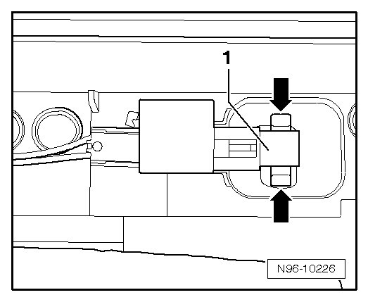
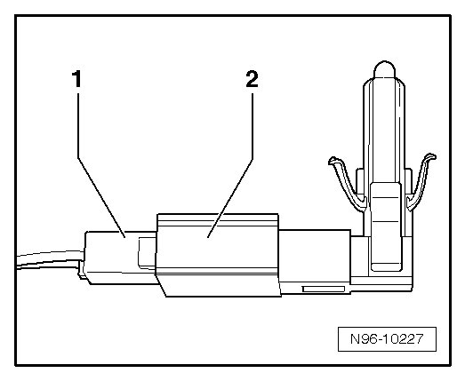

Driver Interior Locking Indicator Lamp and Front Passenger Central Locking -Safe- Indicator Lamp
Front Door Lamps and Switches
Driver Interior Locking Indicator Lamp and Front Passenger Central Locking -SAFE- Indicator Lamp
CAUTION!
When removing and installing components in visible area (switches, covers, trim, etc.), cover by taping the areas at which a prying tool (plastic wedge, screwdriver) will be positioned using commercially available adhesive tape.
• Removal and installation of Driver Interior Locking Indicator Lamp (K174) and Front Passenger Central Locking -SAFE- Indicator Lamp (K204) is performed in the same way and is only described for one indicator lamp.
Removing
- Switch off ignition, switch off all electrical consumers and remove ignition key.
- Remove door trim.
Removal at driver door:.
Removal at front passenger door:.
- Unclip Driver Interior Locking Indicator Lamp (K174) or Front Passenger Central Locking -SAFE- Indicator Lamp (K204) - 1 - out of door trim by compressing retaining tabs - arrows -.

- Disconnect connector - 1 - of Driver Interior Locking Indicator Lamp (K174) or Front Passenger Central Locking -SAFE- Indicator Lamp (K204) - 2 -.

Installing
Install in reverse order of removal